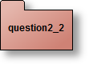

Thèmes du TP :
Lecture préalable :
- Introspection
Lecture préalable :
- Par exemple, ces notes de cours
- Le tutorial d'Oracle sur l'introspection en Java
 Préliminaire indispensable
Préliminaire indispensable
Utiliser BlueJ afin de déclencher par introspection quelques méthodes de la classe java.lang.Math
Menu Outils, item Utiliser une classe de bibliothèque...
Menu Outils, item Utiliser une classe de bibliothèque...
Déclenchez plusieurs méthodes et vérifiez les résultats obtenus
 Une "calculette scientifique"
Une "calculette scientifique"
Développer maintenant une "calculette", en déclenchant par introspection une des méthodes de la classe java.lang.Math, seules les méthodes retournant un "double", attendant un ou deux paramètres de type double sont sélectionnables.
Exemples de scenarii
Une interface utilisateur de cette calculette :
Exemples de scenarii
Une interface utilisateur de cette calculette :
Trace 1 : Appel de double sqrt(double) ici sqrt(9.0)

Trace 2 : Appel de double max(double,double) ici max(9.0,12.0)
Comportement attendu de la calculette :
Complétez la classe TableMethodesJavaLangMath, la classe Calculette est fournie.- dans le même répertoire que cet énoncé :
tp7/> java -jar calculette.jar - ou avec JavaWebStart, cliquez ici
- La classe TableMethodesJavaLangMath est un Singleton (une référence
ici), cette table contient certaines méthodes de la class java.lang.Math et autorise l'invocation de celles-ci avec leur nom.
Cette table ne recense que les méthodes (ici fonctions) dont la valeur de retour est un "double" attendant un ou deux paramètres du même type i.e. double f(double) ou double f(double, double).- Les méthodes à développer sont d'une part des méthodes d'interrogation (des accesseurs) (voir la javadoc ici)
public boolean cetteMethodeEstPresente(String nomDeLaMethode)
vérifie la présence d'une méthode, par exemple pour cos(double) ou max(double, double)
public boolean cetteMethodeAttendDeuxParametres(String nomDeLaMethode)
par exemple : max(double, double) attend 2 paramètres,
une exception est levée si cette méthode est absente
public boolean cetteMethodeAttendUnSeulParametre(String nomDeLaMethode)
public String[] listeDesMethodes()
retourne la liste ordonnée des méthodespublic double invoquer(String nomDeLaMethode,double arg1)
invocation d'une méthode avec son nom,
une exception est levée si cette méthode est absente ou un mauvais usage de la fonction appelée
public double invoquer(String nomDeLaMethode, double arg1, double arg2) - et d'autre part l'initialisation du Singleton
- Les méthodes à développer sont d'une part des méthodes d'interrogation (des accesseurs) (voir la javadoc ici)

Note : Utilisez les méthodes getMethod de la classe java.lang.Class et invoke de la classe java.lang.reflect.Method.
Rappel de syntaxe : La déclaration suivante est une déclaration anonyme de tableau :
Integer.class correspond à new Integer().getClass() et Integer.TYPE représente le type primitif int.
Ce type de déclaration est attendue par les méthodes getMethod et invoke.
Rappel de syntaxe : La déclaration suivante est une déclaration anonyme de tableau :
Class[] t = new Class[]{Integer.class, Integer.TYPE};
Ce type de déclaration est attendue par les méthodes getMethod et invoke.
 Ajout dynamique d'observateurs(Observer) et d'écouteurs(Listener)
Ajout dynamique d'observateurs(Observer) et d'écouteurs(Listener)
Par introspection, nous souhaitons ajouter ou retirer un ou plusieurs observateurs d'une instance d'une classe observable, ces ajouts et retraits sont dynamiques, aucune connaissance du nom des classes à priori n'est nécessaire.
La signature de la méthode demandée est :
Un exemple d'utilisation :
Un "Observable", la classe Entier
Un "Observer", anonyme...
L'exécution de lierObservableEtObserver(e, obs); engendre ensuite, sur cet exemple l'appel de obs.update à chaque changement d'état de e
Ci-dessous un extrait possible d'une classe de test "ParIntrospectionTest"
La signature de la méthode demandée est :
public static void lierObservableEtObserver(Object observable, Object observer) throws Exception {...}
Un "Observable", la classe Entier
public class Entier extends Observable{....
obs = new Observer(){ public void update(....)});
L'exécution de lierObservableEtObserver(e, obs); engendre ensuite, sur cet exemple l'appel de obs.update à chaque changement d'état de e
Ci-dessous un extrait possible d'une classe de test "ParIntrospectionTest"
private static class Entier extends Observable {
private int x;
public Entier(int x) {
this.x = x;
}
public void initialiser(int valeur) {
this.x = valeur;
setChanged();
notifyObservers();
}
public String toString() {
return Integer.toString(x);
}
}
private Observable obs = null;
public void test_lierObservableEtObserver() {
try {
Entier e = new Entier(1);
ParIntrospection.lierObservableEtObserver(e, new Observer() {
public void update(Observable o, Object arg) {
ParIntrospectionTest.this.obs = o;
}
});
e.initialiser(3);
assertNotNull(" notification absente ???", obs);
assertEquals(" pas le bon Observable ???", e.toString(), obs.toString());
assertEquals(" pas le bon Observable ???", "3", obs.toString());
} catch (Exception e) {
fail(" exception !!! " + e.getMessage());
}
}
Proposez les méthodes lierObservableEtObserver et delierObservableEtObserver de la classe ParIntrospection
(voir la javadoc ici)
public static void lierObservableEtObserver(Object observable, Object observer) throws Exception{....
public static void delierObservableEtObserver(Object observable, Object observer) throws Exception{....

Ajout dynamique d'observateurs et d'écouteurs (suite)
Selon le même principe que la question précédente, proposez les méthodes lierSourceEtListener et delierSourceEtListener afin d'ajouter n'importe quel écouteur (XXXXListener) auprès de n'importe quelle instance qui propose la méthode addXXXXListener
(voir la javadoc ici)
public static void lierSourceEtListener(Object source, Object listener) throws Exception{....
public static void delierSourceEtListener(Object source, Object listener) throws Exception{....
A chaque clic sur le bouton ajouter un smiley, un nouveau bouton smile et son smiley apparaissent

Comportement attendu de Frimousse :
- dans le même répertoire que cet énoncé :
tp7/> java -jar smiley.jar - ou avec JavaWebStart, cliquez ici
Ci dessous un extrait de la classe JFrameDemo, l'extrait porte sur la méthode déclenchée à chaque clic sur le bouton "ajouter un smiley", sur ce code : l'ajout habituel d'un "écouteur" est remplacé par l'ajout de ce même écouteur par introspection.
boutonAjouter.addActionListener(new ActionListener() {
public void actionPerformed(ActionEvent ae) {
try {
Smiley smiley = new Smiley();
JButton jb = new JButton("smile");
// jb.addActionListener(smiley); est remplacé par
ParIntrospection.lierSourceEtListener(jb, smiley);
// smiley.addMouseListener(new UnObservateurDeSouris(smiley)); est remplacé par
ParIntrospection.lierSourceEtListener(smiley, new UnObservateurDeSouris(smiley));
JFrameDemo.this.enHaut.add(jb);
JFrameDemo.this.auCentre.add(smiley);
JFrameDemo.this.pack();
} catch (Exception e) {
e.printStackTrace();
}
}
});
 Inspiré de l'Examen NFP121 Juin 2006
Inspiré de l'Examen NFP121 Juin 2006
Soit à développer un petit outil ( de génie) logiciel qui, pour une classe donnée, retourne la liste des méthodes héritées non redéfinies localement.
Complétez la méthode getHeritees de la classe "Introspection" ci dessous
Complétez la méthode getHeritees de la classe "Introspection" ci dessous
package question3;
import java.lang.reflect.Method;
import java.util.Set;
public class Introspection {
public static Set<Method> getHeritees(String nomDeLaClasse) throws ClassNotFoundException {
// à compléter
// à compléter
return /* à modifier */null;
}
public static void main(String[] args) throws ClassNotFoundException {
for (Method m : Introspection.getHeritees("java.util.AbstractCollection")) {
System.out.println(m);
}
}
}
L'exécution de la méthode main devrait donner la trace suivante :

Une application réalisant l'affichage des méthodes héritées de quelques classes
- dans le même répertoire que cet énoncé :
tp7/> java -cp tp7q3.jar question3.Introspection - ou avec JavaWebStart, cliquez ici Les traces sont sur la console, Panneau de configuration Java, onglet Avancé/Console Java, cochez Afficher la console